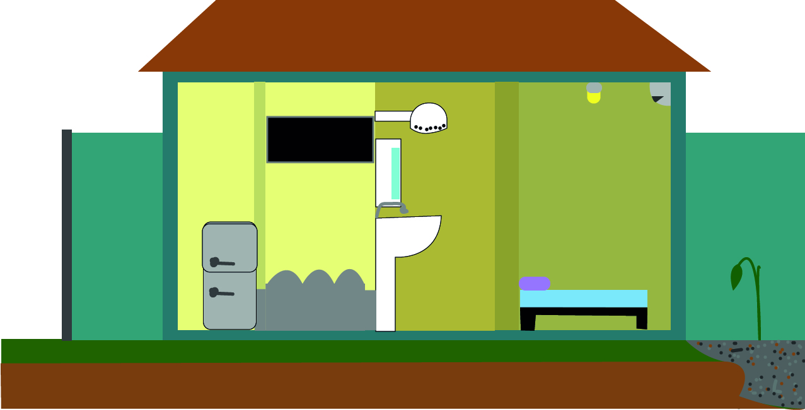

O quadro a cima refere-se ao consumo mensal de energia elétrica de uma pessoa, com base em quatro eletrônicos: geladeira, lâmpada, televisor e chuveiro. A da geladeira é de 140 W e o tempo de uso diário é de 19 min (esse tempo é contado por abrir e fechar a geladeira), seu consumo mensal é de 1,33 KW/h e de R$ 1,89 o valor do KW/h é de 1,42. Potência da lâmpada é 9 W, tempo usado por dia 5 min, o consumo mensal de 0,02 KW/h e de R$ 0,03. Já o televisor tem a potência de 195 W, usado por 30 min, o consumo mensal é de 2,92 KW/h e o gasto de R$ 4,15. Por último, o chuveiro, com a potência de 7.500 W, tempo de uso diário 10 min, consumo mensal de 37,50 KW/h e em R$ 53,25.
